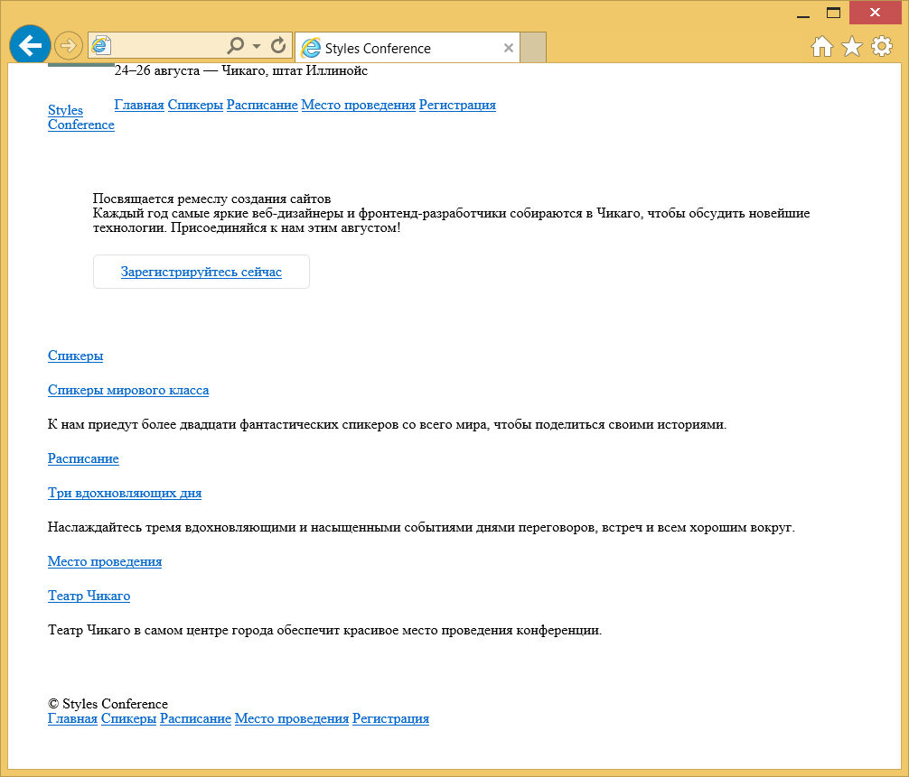
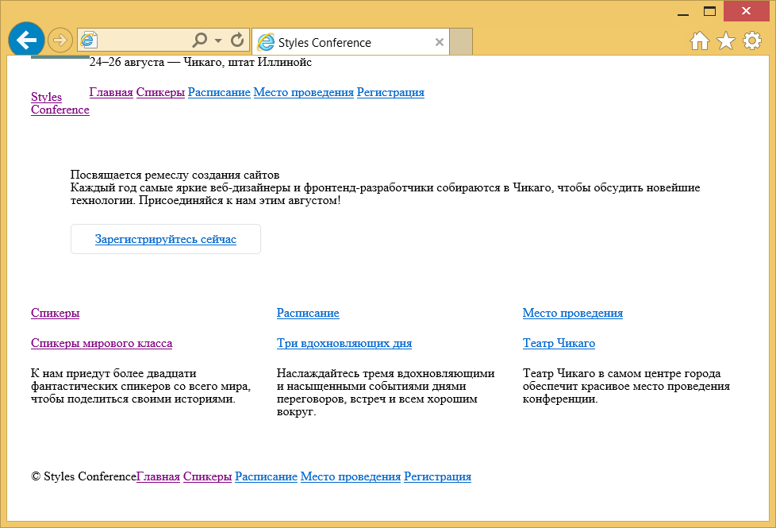

Позиционирование содержимого
Одной из лучших сторон CSS является то, что стили дают нам возможность позиционировать содержимое и элементы на странице практически любым мыслимым образом. Это вносит структурность в наш дизайн и помогает сделать контент более наглядным.
Есть несколько разных типов позиционирования в CSS, каждый из этих типов имеет свою область действия. В этой главе мы собираемся взглянуть на несколько различных случаев применения — создание многократно используемых макетов и уникальное позиционирование одноразовых элементов, а также описание нескольких методов как это сделать.
Позиционирование через float
Один из способов позиционирования элементов на странице — через свойство float. Это свойство довольно универсально и может применяться разными путями.
По существу, свойство float берёт элемент, убирает его из обычного потока страницы и позиционирует слева или справа от родительского элемента. Все остальные элементы на странице будут обтекать такой элемент. Например, абзацы будут обтекать изображение, если для элемента <img> установлено свойство float.
Когда свойство float применяется к нескольким элементам одновременно, это даёт возможность создать макет с обтекаемыми элементами расположенными рядом или напротив друг друга, как показано в многоколоночном макете.
Свойство float принимает несколько значений, два самых популярных — это left и right, они позволяют элементу располагаться слева или справа от своего родителя.
img {
float: left;
}float на практике
Давайте создадим общий макет страницы с шапкой вверху, двумя колонками в центре и подвалом внизу. В идеале эту страницу следует разметить с помощью элементов <header>, <section>, <aside> и <footer>, как описано в уроке 2 «Знакомство с HTML». Внутри элемента <body> HTML может выглядеть так:
<header>...</header>
<section>...</section>
<aside>...</aside>
<footer>...</footer>Демонстрация макета без float
Здесь элементы <section> и <aside> являются блочными, поэтому они укладываются один поверх другого по умолчанию. Однако мы хотим, чтобы эти элементы располагались бок о бок. Установив float для <section> как left, а для <aside> как right, мы можем позиционировать их как две колонки, расположенных напротив друг друга. Наш CSS должен выглядеть так:
section {
float: left;
}
aside {
float: right;
}Для справки, обтекаемые элементы располагаются по краю родительского элемента. Если нет родителя, обтекаемый элемент будет располагаться по краю страницы.
Когда мы устанавливаем элемент обтекаемым, то убираем его из обычного потока HTML-документа. Это приводит к тому, что ширина этого элемента по умолчанию становится шириной его содержимого. Иногда, например, когда мы создаём колонки для многократно используемого макета, такое поведение нежелательно. Это можно исправить путём добавления свойства width с фиксированным значением для каждой колонки. Кроме того, чтобы обтекаемые элементы не соприкасались друг с другом, в результате чего содержимое одного элемента располагается рядом с другим, мы можем использовать свойство margin, чтобы установить пространство между элементами.
Ниже мы расширяем предыдущий блок кода, добавив margin и width для каждой колонки, чтобы лучше формировать наш желаемый результат.
section {
float: left;
margin: 0 1.5%;
width: 63%;
}
aside {
float: right;
margin: 0 1.5%;
width: 30%;
}Демонстрация макета с float
float могут изменить значение display у элемента
Для обтекаемого элемента также важно понимать, что элемент удаляется из обычного потока страницы и что у элемента может измениться значение display, заданное по умолчанию. Свойство float опирается на то, что у элемента значение display задано как block и может изменить значение display у элемента по умолчанию, если он ещё не отображается как блочный элемент.
Например, элемент, у которого display указан как inline, такой как строчный <span>, игнорирует любые свойства height или width. Однако, если для строчного элемента указать float, значение display изменится на block и тогда элемент уже может принимать свойства height или width.
Когда мы применяем float для элемента, то должны следить за тем, как это влияет на значение свойства display.
Для двух колонок вы можете установить float для одной колонка как left, а для другой как right, но для нескольких колонок нам придётся изменить наш подход. Скажем, к примеру, мы хотели бы получить ряд из трёх колонок между нашими элементами <header> и <footer>. Если мы выбросим наш элемент <aside> и воспользуемся тремя элементами <section>, наш HTML может выглядеть следующим образом:
<header>...</header>
<section>...</section>
<section>...</section>
<section>...</section>
<footer>...</footer>Чтобы расположить эти три элемента <section> в строку из трёх колонок, мы должны задать float для всех элементов <section> как left. Мы также должны настроить ширину <section> с учётом дополнительных колонок и расположить их один рядом с другим.
section {
float: left;
margin: 0 1.5%;
width: 30%;
}Здесь у нас есть три колонки, все с равной шириной и значением margin, а также с float, заданным как left.
Демонстрация трёхколоночного макета с float
Очистка и содержимое float
Свойство float было первоначально разработано, чтобы позволить содержимому обтекать вокруг изображений. Для изображения может быть задано float и всё содержимое вокруг этого изображения, естественно, обтекает вокруг него. Хотя это прекрасно работает для картинок, свойство float на самом деле не было предназначено для использования в макете и с целью позиционирования и, таким образом, оно идёт с несколькими ловушками.
Одной из этих ловушек является то, что иногда надлежащие стили не отображаются на элементе, который расположен рядом с обтекаемым элементом или является его родителем. Когда элемент установлен обтекаемым, то он убирается из обычного потока страницы и, как результат, стили элементов вокруг этого обтекаемого элемента могут получить негативное влияние.
Часто значения свойств margin и padding интерпретируются некорректно, заставляя их сливаться с обтекаемым элементом. Другие свойства также могут быть затронуты.
Другая ошибка состоит в том, что иногда нежелательный контент начинает обтекать элемент с float. Удаление элемента из потока документа позволяет всем элементам вокруг обтекаемого элемента обходить его и задействовать любое доступное пространство вокруг обтекаемого элемента, что часто бывает нежелательно.
В нашем предыдущем примере с двумя колонками, после того как мы добавили float к элементам <section> и <aside>, но до того как установили свойство width к любому из них, содержимое внутри элемента <footer> располагалось между двумя обтекаемыми элементами выше него, заполняя всё доступное пространство. Следовательно, элемент <footer> находился бы в промежутке между элементами <section> и <aside>, занимая свободное место.
Демонстрация макета без очистки float
Чтобы предотвратить содержимое от обматывания вокруг обтекаемых элементов, нам нужно сделать очистку float и вернуть страницу в её обычный поток. Мы рассмотрим как очистить float, а затем взглянем на их содержимое.
Очистка float
Очистка float происходит с помощью свойства clear, которое принимает несколько различных значений: наиболее часто используемые значения — left, right и both.
div {
clear: left;
}Значение left очищает левые float, в то время как значение right очищает правые float. Значение both, однако, очистит левые и правые float и часто является наиболее идеальным вариантом.
Возвращаясь к нашему предыдущему примеру, если мы используем свойство clear со значением both для элемента <footer>, то можем очистить float. Важно, что clear применяется к элементу, указанному после обтекаемых элементов, а не раньше, чтобы вернуть страницу в её обычный поток.
footer {
clear: both;
}Демонстрация макета с очисткой float
Содержимое float
Вместо очистки float, ещё одним вариантом является установка содержимого float. Результат получится почти такой же, однако содержимое float действительно гарантирует, что все наши стили будут отображаться надлежащим образом.
Чтобы установить содержимое float, обтекаемые элементы должны находиться внутри родительского элемента, он будет выступать в качестве контейнера, оставляя поток документа полностью обычным за его пределами. В стилях для этого родительского элемента представлен класс group, как показано здесь:
.group::before,
.group::after {
content: "";
display: table;
}
.group::after {
clear: both;
}
.group {
clear: both;
*zoom: 1;
}Здесь немного что происходит, но, по сути, всё что CSS делает — очищает все обтекаемые элементы внутри элемента с классом group и возвращает документ в обычный поток.
Более конкретно, псевдоэлементы ::before и ::after, как указано в уроке 4, динамически генерируют элементы выше и ниже элемента с классом group. Эти элементы не включают в себя какой-либо контент и отображаются как табличные элементы, подобно элементам блочным. Динамически генерируемый элемент после элемента с классом group очищает float внутри элемента с классом group, так же, как и clear ранее. И, наконец, элемент с классом group также очищает все float, которые могут появиться до него на случай, если существует float со значением left или right. Также сюда включена небольшая хитрость, которая заставляет старые браузеры играть красиво.
Здесь больше кода, чем единственная команда clear: both, но он может оказаться весьма полезным.
Рассматривая наш макет страницы с двумя колонками мы могли бы обернуть <section> и <aside> родительским элементом. Этот родительский элемент будет содержать в себе обтекаемые элементы. Код будет выглядеть следующим образом:
HTML
<header>...</header>
<div class="group">
<section>...</section>
<aside>...</aside>
</div>
<footer>...</footer>CSS
.group::before,
.group::after {
content: "";
display: table;
}
.group::after {
clear: both;
}
.group {
clear: both;
*zoom: 1;
}
section {
float: left;
margin: 0 1.5%;
width: 63%;
}
aside {
float: right;
margin: 0 1.5%;
width: 30%;
}Демонстрация макета с содержимым float
Показанная здесь техника известна как «clearfix» и часто встречается на других сайтах с именем класса clearfix или cf. Мы решили использовать имя класса group, потому что он представляет группу элементов и лучше выражает содержимое.
Когда для элементов задано float важно следить за тем, как они влияют на поток страницы и убедитесь, что поток страницы сбрасывается путём очистки или через содержимое float, как надо. В противном случае, отслеживание float может вызвать немало головной боли, особенно на страницах, содержащих несколько строк, в каждой из которых несколько колонок.
На практике
Вернёмся к сайту Styles Conference и опробуем на нём добавление float к некоторому содержимому.
- Перво-наперво, перед применением float к любому элементу, давайте обеспечим содержимым эти обтекаемые элементы, добавив clearfix в наш CSS. В файле main.css, чуть ниже наших стилей сетки, добавим clearfix под именем класса group, как и раньше.
/* ======================================== Clearfix ======================================== */ .group::before, .group::after { content: ""; display: table; } .group::after { clear: both; } .group { clear: both; *zoom: 1; } Теперь, когда мы можем использовать float, давайте зададим его для основного <h1> внутри элемента <header> как left и позволим остальному содержимому в заголовке обтекать его справа.
Чтобы сделать это, добавим класс logo к элементу <h1>. Затем внутри нашего CSS добавим новый раздел стилей для основного заголовка. В этом разделе мы выберем элемент <h1> с классом logo и установим float как left.
HTML
<h1 class="logo"> <a href="index.html">Styles Conference</a> </h1>CSS
/* ======================================== Основной заголовок ======================================== */ .logo { float: left; }Пока мы здесь, добавим чуть больше деталей к нашему логотипу. Начнём с размещения элемента <br> или разрыва строки между словами «Styles» и «Conference», чтобы заставить текст нашего логотипа располагаться на двух строках.
В CSS добавим границу по верху нашего логотипа и небольшой вертикальный padding, чтобы логотип свободно «дышал».
HTML
<h1 class="logo"> <a href="index.html">Styles <br> Conference</a> </h1>CSS
.logo { border-top: 4px solid #648880; padding: 40px 0 22px 0; float: left; }Поскольку мы сделали элемент <h1> обтекаемым, то хотим установить содержимое float. Ближайшим родителем для <h1> является элемент <header>, поэтому мы добавим к нему класс group. Это применит к нему стили clearfix, которые мы установили ранее.
<header class="container group"> ... </header>Элемент <header> принимает форму, так что давайте взглянем на элемент <footer>. Подобно тому, что мы сделали с <header>, мы установим float для наших авторских прав как left внутри <small> и пусть все остальные элементы обтекают его справа.
В отличие от элемента <header>, однако, мы не собираемся применять класс непосредственно к обтекаемому элементу. На этот раз мы собираемся добавить класс к родителю обтекаемого элемента и использовать уникальный селектор CSS, чтобы выбрать элемент, а затем задать ему float.
Начнём с добавления класса primary-footer к элементу <footer>. Поскольку мы знаем, что у нас будут обтекаемые элементы внутри <footer>, то должны добавить класс group, пока мы здесь.
<footer class="primary-footer container group"> ... </footer>Теперь, когда класс primary-footer установлен для элемента <footer>, мы можем использовать этот класс, чтобы целенаправленно выбрать элемент <small> с помощью CSS. Мы хотим задать ему float как left. Не забудьте создать новый раздел в нашем файле main.css для стиля основного подвала.
/* ======================================== Основной подвал ======================================== */ .primary-footer small { float: left; }Для проверки — здесь мы выбираем элемент <small>, который должен находиться внутри элемента со значением primary-footer у атрибута class, такой как наш элемент <footer>, к примеру.
Наконец, добавим небольшой padding сверху и снизу элемента <footer>, это поможет немного отделить его от остальной части страницы. Мы можем сделать это напрямую с помощью класса primary-footer.
.primary-footer { padding-bottom: 44px; padding-top: 44px; }
С учётом всех этих изменений в элементах <header> и <footer>, мы должны быть уверены, что внесли их на каждой странице, а не только на странице index.html.

Рис. 5.01. С помощью нескольких float, элементы <header> и <footer> на главной странице Styles Conference работают совместно
Позиционирование через inline-block
В дополнение к использованию float, ещё один способ, которым мы можем позиционировать контент — это применение свойства display в сочетании со значением inline-block. Метод с inline-block, как мы ещё обсудим, в первую очередь полезен для компоновки страниц или для размещения элементов в линию рядом друг с другом.
Напомним, что значение inline-block для свойства display отображает элементы в линию и позволяет им принимать все свойства блочной модели, включая height, width, padding, border и margin. Применение inline-block позволяет нам в полной мере воспользоваться блочной моделью, не беспокоясь об очистке каких-либо float.
inline-block на практике
Давайте взглянем на наш трёхколоночный пример с самого начала. Начнём мы, сохраняя наш HTML таким:
<header>...</header>
<section>...</section>
<section>...</section>
<section>...</section>
<footer>...</footer>Теперь вместо float для наших трёх элементов <section> мы изменим у них значение display на inline-block, оставляя свойства margin и width те, что были ранее. В результате наш CSS будет выглядеть следующим образом:
section {
display: inline-block;
margin: 0 1.5%;
width: 30%;
}К сожалению, одного этого кода недостаточно чтобы сделать трюк и последний элемент <section> выталкивается на новую строку. Помните, поскольку строчно-блочные элементы отображаются на одной линии друг за другом, они включают единое пространство между ними. Когда размер каждого отдельного пространства добавляется к ширине и значению горизонтального margin всех элементов в строке, общая ширина становится слишком большой, выталкивая последний элемент <section> на новую строку. Чтобы отобразить все элементы <section> на одной строке, следует удалить пустое пространство между каждым <section>.
Демонстрация элементов inline-block с пробелом
Удаление пространства между строчно-блочными элементами
Есть несколько методов, как удалить пространство между строчно-блочными элементами и некоторые из них более сложные, чем другие. Мы собираемся сосредоточиться на двух самых простых методах, каждый из которых происходят внутри HTML.
Первое решение — это поместить каждый новый открывающий тег элемента <section> в той же строке, что и закрывающий тег предыдущего элемента <section>. Вместо использования новой строки для каждого элемента мы в итоге начинаем элементы с той же строки. Наш HTML может выглядеть следующим образом:
<header>...</header>
<section>
...
</section><section>
...
</section><section>
...
</section>
<footer>...</footer>Написание строчно-блочных элементов таким образом гарантирует, что пространства между такими элементами в HTML не существует. Следовательно, пространство и не появится при отображении страницы.
Демонстрация элементов inline-block без пробелов
Ещё один метод для удаления пространства между строчно-блочными элементами состоит в открытии комментария HTML непосредственно после закрывающего тега элемента. Затем закройте комментарий непосредственно перед открывающим тегом следующего элемента. Это позволяет строчно-блочным элементам начинаться и завершаться на отдельных строках в HTML и «закомментирует» любое потенциальное пространство между элементами. В результате код будет выглядеть следующим образом:
<header>...</header>
<section>
...
</section><!--
--><section>
...
</section><!--
--><section>
...
</section>
<footer>...</footer>Ни один из этих вариантов не является совершенным, но они полезны. Я склоняюсь в пользу применения комментариев для лучшей организации, но какой вариант вы выберете полностью зависит от вас.
Создание многократно используемых макетов
При создании сайта всегда лучше написать модульные стили, которые могут быть повторно задействованы в других местах, а многократно используемые макеты находятся в верхней части списка повторно применяемого кода. Макеты могут быть созданы с помощью float или строчно-блочных элементов, но что работает лучше и почему?
Вопрос что лучше для структуры страницы — обтекаемые или строчно-блочные элементы открыт для обсуждения. Мой подход заключается в использовании строчно-блочных элементов для создания сетки или макета страницы, а затем задействовать float, когда мне хочется чтобы контент обтекал вокруг данного элемента (для чего float и были предназначены при работе с изображениями). Вообще, я также считаю, что со строчно-блочными элементами легче работать.
Тем не менее, используйте то, что работает лучше для вас. Если с одним подходом вы знакомы лучше чем с другим, тогда задействуйте его.
В настоящее время в работе появились новые спецификации CSS — в частности, свойства flex- и grid-, которые помогут решить, как лучше всего сверстать страницы. Следите за этими методами, когда они начнут всплывать.
На практике
С твёрдым пониманием многократно используемых макетов, пришло время внедрить один на наш сайт Styles Conference.
Для сайта Styles Conference мы создадим трёхколоночный макет используя строчно-блочные элементы. Мы сделаем это так, чтобы получить три колонки одинаковой ширины или две колонки с общей шириной, разделённой между ними как 2/3 для одной и 1/3 для другой.
Для начала мы создадим классы, определяющие ширину этих колонок. Эти два класса мы назовём col-1-3 для одной трети и col-2-3 для двух третей. В разделе «Сетка» нашего файла main.css перейдём вперед и определим эти классы и соответствующую им ширину.
.col-1-3 { width: 33.33%; } .col-2-3 { width: 66.66%; }Мы хотим чтобы обе колонки отображались как строчно-блочные элементы. Нам также надо убедиться, что вертикальное выравнивание у них задано по верхней части каждой колонки.
Давайте создадим два новых селектора, которые совместно будут использовать display и vertical-align.
.col-1-3, .col-2-3 { display: inline-block; vertical-align: top; }Взгляните на CSS снова. Мы создали два селектора класса col-1-3 и col-2-3 разделённых запятой. Запятая в конце первого селектора означает, что за ней следует другой селектор. После второго селектора идёт открывающая фигурная скобка, которая сообщает что начинается описание стиля. С помощью запятой разделяющей селекторы мы можем привязать один стиль к нескольким селекторам одновременно.
Мы хотим поместить некоторое пространство между колонок, которое поможет разбить содержимое. Это можно сделать, добавив горизонтальный padding к каждой колонке.
Это хорошо работает, однако, когда две колонки располагаются рядом друг с другом, ширина пространства между ними будет вдвое больше, чем пространство от внешнего края. Чтобы уравновесить это, мы поместим все наши колонки в сетку и добавим к ней тот же padding.
Давайте воспользуемся классом grid, чтобы определить нашу сетку, а затем зададим одинаковый горизонтальный padding для классов grid, col-1-3 и col-2-3. С запятыми, снова разделяющих наши селекторы, наш CSS выглядит следующим образом:
.grid, .col-1-3, .col-2-3 { padding-left: 15px; padding-right: 15px; }Когда мы устанавливаем горизонтальный padding, нам нужно быть осторожными. Помните, в прошлом уроке мы создали контейнер с классом container по центру всего нашего контента на странице с шириной 960 пикселей. В данный момент, если бы мы поставили элемент с классом grid внутрь элемента с классом container, то их горизонтальные padding сложились бы вместе и наши колонки не будут отображаться пропорционально ширине остальной части страницы.
Мы не хотим чтобы это произошло, так что вместо этого мы должны поделиться некоторыми стилями из правил container с набором правил grid. В частности, мы должны поделиться свойством width (чтобы убедиться, что наша страница остаётся фиксированной на 960 пикселей в ширину) и свойством margin (чтобы выровнять по центру страницы элемент с классом grid).
Мы осуществим это, разбивая набор старых правил container на следующее:
.container, .grid { margin: 0 auto; width: 960px; } .container { padding-left: 30px; padding-right: 30px; }Теперь любой элемент с классом container или grid будет 960 пикселей в ширину и располагаться по центру страницы. Кроме того, мы сохранили существующий горизонтальный padding для любого элемента с классом container путём перемещения его в новый, отдельный набор правил.
Хорошо, всю тяжёлую необходимую часть по настройке сетки завершили. Теперь пришло время для работы с нашим HTML и просмотра, как эти классы действуют.
Мы начнём с тизеров на главной странице, в файле index.html, выровняв их по трём колонкам. В настоящее время тизеры обёрнуты элементом <section> с классом container. Мы хотим изменить класс container на grid так, чтобы внутри мы могли начать размещение колонок.
<section class="grid"> ... </section>Далее мы хотим добавить класс col-1-3 для каждого элемента <section> внутри <section> с классом grid.
<section class="grid"> <section class="col-1-3"> ... </section> <section class="col-1-3"> ... </section> <section class="col-1-3"> ... </section> </section>И, наконец, поскольку каждая наша колонка является строчно-блочным элементом, нам следует убедиться что мы удалили пустое пространство между ними. Чтобы сделать это мы воспользуемся комментариями и добавим немного документации к каждому разделу, чтобы лучше организовать свой код.
<section class="grid"> <!-- Спикеры --> <section class="col-1-3"> ... </section><!-- Расписание --><section class="col-1-3"> ... </section><!-- Место проведения --><section class="col-1-3"> ... </section> </section>Для проверки — в строке 3 мы оставили комментарий, идентифицирующий раздел «Спикеры», который за ним следует. В конце строки 7 мы открываем комментарий сразу после закрывающего тега </section>. Внутри этого комментария, в строке 9 мы определяем следующий раздел «Расписание». Затем закрываем комментарий в начале строки 11, сразу перед открывающим тегом <section>. Аналогичная структура комментариев появляется в строках с 13 до 17 между двумя элементами <section>, прямо перед разделом «Место проведения». В целом, мы закомментировали любое потенциальное пустое пространство между колонок, одновременно используя те же комментарии для идентификации наших разделов.
Теперь у нас есть повторно используемая трёхколоночная сетка, которая поддерживает разные расстановки, с использованием ширины колонок как 1/3 и 2/3. Наша главная страница теперь содержит три колонки, разделяя все тизеры.

Рис. 5.02. Главная страница Styles Conference теперь включает трёхколоночный макет
Демонстрация и исходный код
Ниже вы можете просмотреть сайт Styles Conference в его нынешнем состоянии, а также скачать исходный код сайта на данный момент.
Просмотр сайта Styles Conference или Скачать исходный код
Уникальное позиционирование элементов
Рано или поздно каждый пожелает точно позиционировать элемент, но float или строчно-блочные элементы не позволяют проделать такой трюк. Обтекаемые элементы, которые удаляют элемент из потока страницы, часто приводят к нежелательным результатам, поскольку окружающие элементы обтекают вокруг элемента с float. Строчно-блочные элементы, если только мы не создаём колонки, могут быть довольно неудобны, когда дело касается правильного положения. Для подобных ситуаций мы можем использовать свойство position в сочетании со свойствами смещения блока.
Свойство position определяет, как элемент позиционируется на странице и будет ли он отображаться в обычном потоке документа. Оно применяется в сочетании со свойствами смещения блока — top, right, bottom и left, которые точно определяют, где элемент будет расположен путём перемещения элемента в разных направлениях.
По умолчанию у каждого элемента значение position установлено как static, это означает, что элемент существует в обычном потоке документа и не принимает какие-либо свойства для его смещения. Значение static наиболее часто переписывается значением relative или absolute, которые мы рассмотрим дальше.
Относительное позиционирование
Значение relative для свойства position позволяет элементам отображаться в обычном потоке страницы, резервируя место для элемента как предполагалось и не позволяя другим элементам его обтекать. Однако, оно также позволяет модифицировать положение элемента с помощью свойств смещения. К примеру, рассмотрим следующие HTML и CSS:
HTML
<div>...</div>
<div class="offset">...</div>
<div>...</div>CSS
div {
height: 100px;
width: 100px;
}
.offset {
left: 20px;
position: relative;
top: 20px;
}Демонстрация относительного позиционирования
Здесь для второго элемента <div> с классом offset задано значение position как relative, а также два свойства смещения — left и top. Это сохраняет исходное положение элемента и другим элементам не разрешено двигаться в эту область. Кроме того, свойства смещения перемещают элемент, выталкивая его на 20 пикселей от левого и на 20 пикселей от верхнего исходного местоположения.
Для относительно позиционированных элементов важно знать, что свойства смещения блока определяют, куда элемент будет перемещён, учитывая его исходное положение. Таким образом, свойство left со значением 20 пикселей фактически толкает элемент вправо на 20 пикселей. Свойство top со значением 20 пикселей затем будет толкать элемент вниз на 20 пикселей.
Когда мы позиционируем элемент с помощью свойств смещения, элемент перекрывает элемент под ним, а не сдвигает его вниз, как это делают свойства margin или padding.
Абсолютное позиционирование
Значение absolute для свойства position отличается от значения relative тем, что элемент с абсолютным позиционированием не появляется в обычном потоке документа, исходное пространство и положение абсолютно позиционируемого элемента не резервируется.
Кроме того, абсолютно позиционируемые элементы перемещаются относительно их ближайшего относительно позиционированного родительского элемента. Если относительно позиционированного родителя не существует, то абсолютно позиционированный элемент будет позиционироваться относительно элемента <body>. Это небольшая часть информации; давайте взглянем на то, как это работает внутри некоторого кода:
HTML
<section>
<div class="offset">...</div>
</section>CSS
section {
position: relative;
}
div {
position: absolute;
right: 20px;
top: 20px;
}Демонстрация абсолютного позиционирования
В этом примере элемент <section> позиционируется относительно, но не включает каких-либо свойств смещения. Следовательно, его положение не меняется. Элемент <div> с классом offset включает значение position как absolute. Поскольку элемент <section> является ближайшим относительно позиционированным родительским элементом для <div>, то элемент <div> будет позиционироваться относительно элемента <section>.
Для относительно позиционированных элементов свойства смещения определяют, в каком направлении элемент будет перемещён относительного самого себя. Для абсолютно позиционируемых элементов свойства смещения определяют, в каком направлении элемент будет перемещён относительно его ближайшего относительно позиционированного родителя.
В результате свойств right и top, элемент <div> появится в 20 пикселях справа и 20 пикселях сверху внутри <section>.
Поскольку элемент <div> позиционируются абсолютно, он не располагается в обычном потоке страницы и будет перекрывать любые окружающие его элементы. Кроме того, исходное положение <div> не сохраняется и другие элементы могут занять это место. Как правило, большая часть позиционирования может происходить без применения свойств position и свойств смещения, но в некоторых случаях они могут оказаться чрезвычайно полезны.
Резюме
Изучение позиционирования содержимого в HTML и CSS является огромным шагом в сторону освоения этих языков. Добавьте к этому блочную модель и вот мы уверенно движемся по пути превращения во фронтенд-разработчиков.
Для проверки, в этом уроке мы рассмотрели следующее:
- Что такое float и как его использовать, чтобы позиционировать содержимое.
- Как очистить и установить содержимое обтекаемых элементов.
- Как позиционировать содержимое с помощью строчно-блочных элементов.
- Как удалить пустое пространство между строчно-блочными элементами.
- Как уникально позиционировать контент через относительное и абсолютное позиционирование элементов.
Мы добавляем новые навыки с каждым уроком, так что давайте продолжим. Следующая тема — типографика!
Ресурсы и ссылки
- CSS Float Theory via Smashing Magazine
- CSS Positioning 101 via A List Apart

Все материалы сайта доступны по лицензии Creative Commons «Attribution-NonCommercial» («Атрибуция — Некоммерческое использование») 4.0 Всемирная, если не указано иное.